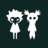

Little Nightmares IIIDetalles
Descripción
Dos jóvenes amigos se han perdido en un mundo aterrador no apto para niños.
Si no hallan una forma de salir de la Nada, se verán condenados a un destino peor que la muerte.

Jugaréis con Low y Alone, que se convirtieron en mejores amigos el día que se encontraron en esta pesadilla solitaria. Cada personaje posee un objeto característico: el de Low es un arco y el de Alone, una llave inglesa. Trabajando juntos, le han cogido el gusto a colarse por pasajes ocultos, encaramarse para superar obstáculos enormes y cubrirse mutuamente las espaldas. Tanto si jugáis con algún amigo como si a vuestro compañero lo controla la I.A., ambos dependeréis de vuestros objetos característicos para crear oportunidades y avanzar. El entorno está lleno de pistas y posibilidades que pueden ser explotadas por unos niños imaginativos. Las flechas de Low pueden alcanzar objetivos altos, cortar cuerdas o derribar a enemigos voladores, mientras que la llave inglesa de Alone es la herramienta ideal para aplastar a los enemigos aturdidos, destrozar barreras o manipular el mecanismo de enormes máquinas.

Vayáis adonde donde vayáis, la Nada está habitada por monstruos horripilantes, que no dudarán en tomarse todas las molestias que hagan falta para capturar a cualquier pequeño intruso que atraiga su atención. Podríais terminar jugando una versión aterradora del escondite con la Bebé gigante en las áridas ruinas de Necrópolis, viéndooslas y deseándooslas para luchando por evitar los enjambres de voraces gorgojos de los dulces en la inquietante fábrica de dulces o esquivando unos pies muy pesados mientras corréis por el paseo encharcado de lluvia de un parque de atracciones cochambroso. Tendréis que estar siempre listos para echar a correr, esconderos e incluso defenderos a la menor señal para poder seguir con vida.

Que la desoladora belleza de la Nada no os distraiga demasiado: hay oscuros misterios esperando a que Low y Alone sigan el camino de espejos a través de la Espiral. A medida que cada nueva ubicación se vaya volviendo más peligrosa y perturbadora que la anterior, emergerán los traumáticos recuerdos del pasado. ¿Conseguirán Low y Alone escapar por fin de esta pesadilla interminable? Solo vosotros podéis ayudar a estos pequeñines...